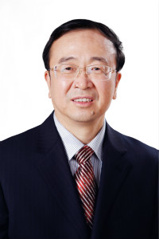
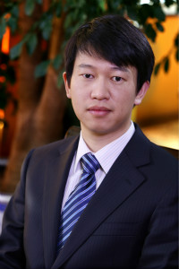
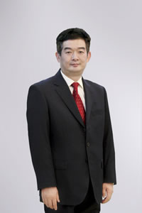

简
繁
En
Toggle navigation
高管信息
关于亚宝
亚宝概况
高管信息

任武贤
党委书记、董事长
任武贤，汉族，中共党员，芮城县人。研究生学历，高级工程师，职业药师，全国劳动模范，全国人大代表。1977年7月到芮城制药厂参加工作；1981年12月毕业于山西医学院药学专业；1996年担任芮城制药厂副厂长；1990年11月任芮城制药厂厂长兼总工程师；1996年12月任亚宝集团董事长兼总经理；2000年6月西南师范大学经济管理研究生毕业；2001年3月～任亚宝集团党委书记、董事长。
许振江
党委书记、监事会主席
许振江，汉族，西陌镇奉公村人。1995.6月加入中共党员，1996年7月毕业于运城高专计算机专业，研究生学历，工程师。1996年参加工作。 1997年——1999年12月任亚宝集团企业管理部，负责企业股份制改制工作。 2000年1月——2000年7月，任山西亚宝药业集团股份有限公司董事、董事会秘书，负责董事会日常事务。 2000年7月——2001年4月，任山西亚宝药业集团股份有限公司董事、一分公司经理。
汤柯
常务副总裁
汤柯，汉族，1992.9月加入中国共产党，陕西省咸阳市杨凌农业示范区五泉人。1995.7月毕业于陕西中医学院。1995.7～2002.12月任职于陕西中医药研究院及附属医院，历任住院医师、主治医师；2003.1月～2004年任亚宝医药经销有限公司市场部产品经理；2005～2006年任亚宝医药经销OTC部经理；2006～2012年任亚宝集团副总裁；2014年至今任亚宝集团常务副副总裁。

任伟
副总裁
任伟，汉族，大学本科学历，加拿大约克大学留学生，生物工程、管理经济学双学位。亚宝药业集团股份有限公司副总裁，中国民（私）营经济研究会理事、山西欧美同学会山西留学人员联谊会理事。历任渣打银行北京分行信贷主任、北京亚宝投资管理有限公司总经理、亚宝药业集团股份有限公司总裁助理等职务。
任蓬勃
副总裁
任蓬勃，汉族，中共党员，法学硕士。 1992年7月 毕业于运城师范学校； 1996年7月 毕业于山西省教育学院汉语语言专业； 2007年6月 获得香港公开大学法律硕士学位； 1992-1994年在永乐中学从事教学工作； 1994-2000年，在芮城二中从事教学工作，担任政教主任，团委书记； 2000-2001年，在亚宝药业集团股份有限公司担任上市 办主任； 2001-2007年，在亚宝药业集团股份有限公司担任董事会秘书兼证券部部长。

张晓军
副总裁
张晓军，汉族，湖北荆州石首市人。 1996年毕业于天津纺织学院会计专业。 1996.9月到芮城县制药厂财务科； 1997年任账务科主管； 1999年任亚宝集团财务副部长； 2002年任亚宝集团财务部部长； 2004年任亚宝集团财务总监； 2006年至今任亚宝集团副总裁。
梁军
副总裁
梁军，汉族，天津市河北区人。1990.9～1994.7月毕业于中国药科大学中药制药专业； 2009.9至今天津大学制药工程硕士在读。 1994.7～1998.5任职于天津同仁堂制药厂技术部从事新药开发工作； 1998.6～2002.10月任职于葛兰素史克（天津）有限公司从事产品技术转移与生产管理； 2002.11～2003.8月任上海卡乐康包衣技术有限公司技术服务经理； 2003.8～2006.7月任职于葛兰素史克（天津）有限公司从事生产管理。
王鹏
副总裁、研究院院长
王鹏，汉族，福建省厦门市人。 1978.9～1982.7月获中国药科大学药物化学学士学位； 1983.9～1984.9月获中国四川医科大学生物化学专业硕士学位； 1984.10～1990.3月获日本东京大学生物化学博士学位。 1990.2～1991.10月任职于先灵葆雅研究所（美国）博士后研究员； 1991.11～1994年9月任职于先灵葆雅研究所（美国）高级研究员； 1994.10～1996.6月任职于先灵葆雅研究所（美国）副主任研究员。
赵保义
工会主席
赵保义，汉族，1978年3月参加工作，1982年8月加入共产党员，大专学历。1978年3月至1988年10月在空军部队服役；1988年10月至2004年9月在芮城县人事局工作并担任副局长；2004年9月至今在亚宝集团工作，现任亚宝集团党委副书记、工会主席。
招贤纳士
|
联系我们
|
法律声明
发现我们
|